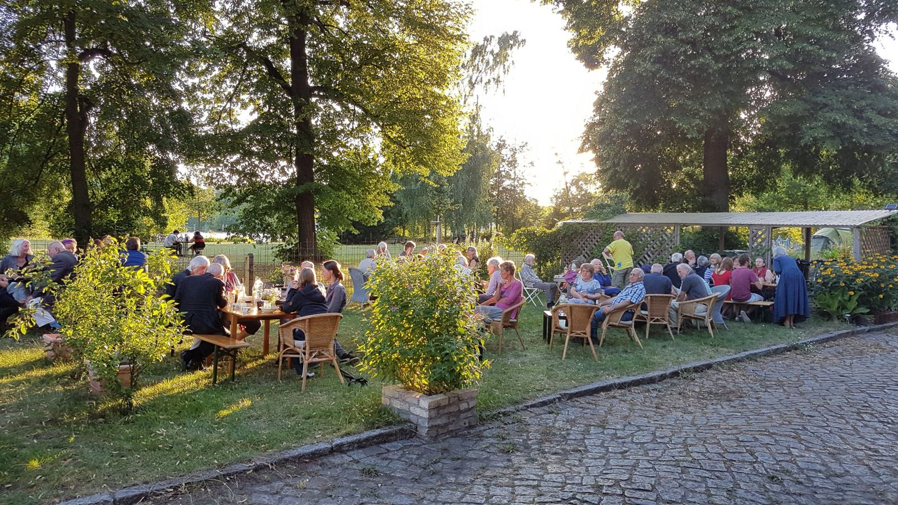
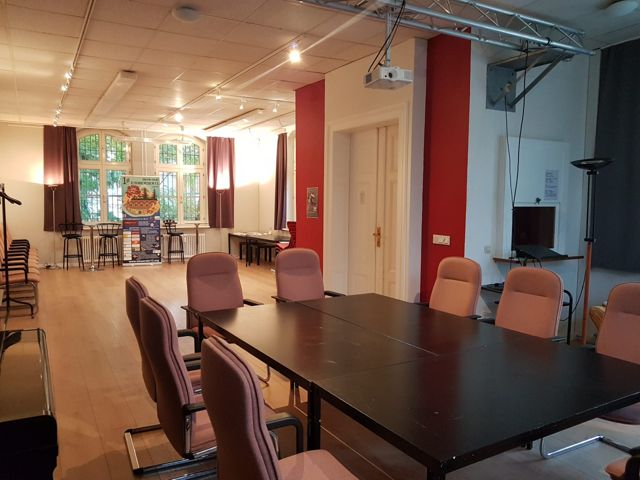
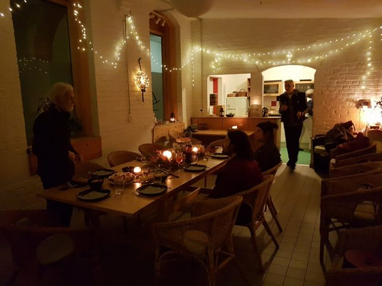
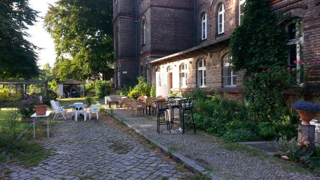
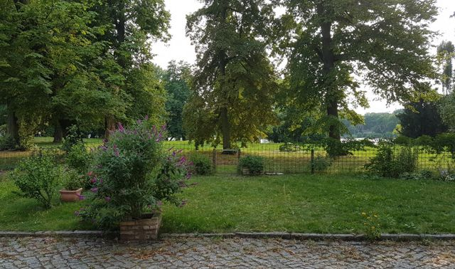

InselSalon · Berlin-Spandau
Ein Raum.
Ein Garten.
Ihr Tag.
Mieten Sie den InselSalon für Feste, Seminare und Kultur. Mit Café, Küche und einem Garten direkt an der Havel.

SalonCafé & KücheTerrasseGartenHavel
Was haben Sie vor?
Ein Ort für Ihre Ideen.
Von drinnen nach draußen
Die schönste Pause liegt gleich nebenan.
Im Salon beginnt Ihr Tag. Im Café wird zusammen gegessen. Und draußen geht das Gespräch weiter – auf der Terrasse, im Garten, am Wasser.




Erzählen Sie uns von Ihrem Vorhaben.
Wir besprechen gemeinsam, was zu Ihrem Tag passt.